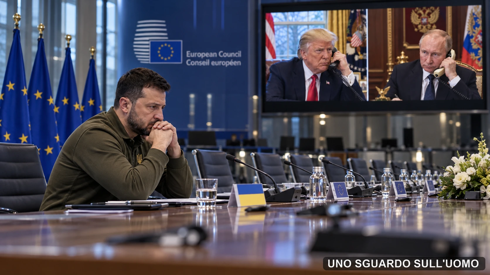

L’accordo sul diesel russo annunciato da Donald Trump e Vladimir Putin mostra che gli Stati Uniti possono cambiare rotta quando il costo interno dell’energia aumenta. Per l’Europa il problema non è soltanto pagare guerra e ricostruzione, ma decidere quale rapporto costruire con Washington, Mosca e l’Ucraina.
In questo dossier
- La telefonata che riapre il mercato
- Perché il problema è il diesel e non soltanto il petrolio
- Il prezzo economico della coerenza politica
- Raffinerie, navi e obiettivi militari
- Il diesel entra nella competizione automobilistica
- Zelensky e il prezzo di una pace negoziata da altri
- Un Paese da ricostruire e una base produttiva da difendere
- Chi finanzia e chi decide il dopoguerra
- Pratica di Mare e il rapporto che l’Europa non ha risolto
- La NATO e il vuoto della decisione europea
- La nostra tesi: la biodiversità delle nazioni
- Prima la convergenza, poi il federalismo
- Il conto e la decisione
- Fonti
- Nota editoriale

La telefonata che riapre il mercato
Il 9 ottobre 2026 Donald Trump annuncia di aver raggiunto telefonicamente un’intesa con Vladimir Putin per riportare diesel russo sul mercato statunitense e internazionale. Le quantità indicate sono consistenti: più di 300.000 tonnellate nell’immediato, altre 500.000 a novembre, un milione subito dopo e ulteriori tre milioni condizionati alla capacità delle raffinerie russe. Sono volumi annunciati, non carichi già consegnati. La Casa Bianca non ha chiarito chi comprerà il prodotto, a quale prezzo e quali contropartite siano state concordate.
Poche ore dopo, l’Office of Foreign Assets Control (OFAC) del Dipartimento del Tesoro pubblica la General License 135. La licenza autorizza determinate transazioni relative a vendita, consegna, scarico e importazione di diesel di origine russa e sospende fino all’aprile 2027 l’applicazione delle sanzioni per i carichi che rispettano le condizioni indicate. Washington non compra direttamente il gasolio: apre lo spazio giuridico nel quale operatori commerciali possono acquistarlo e importarlo.
La distinzione è decisiva. Gli Stati Uniti non hanno cancellato l’intero sistema delle sanzioni contro Mosca, ma hanno creato una finestra specifica quando il costo del carburante è diventato un problema interno. Il prodotto proviene dalla stessa economia che Washington ha cercato di colpire per ridurre le risorse disponibili alla guerra russa in Ucraina. La scelta mostra quanto rapidamente uno strumento economico possa essere rimodulato quando cambiano gli interessi nazionali.
Volodymyr Zelensky ha definito la decisione debole e ingiusta. Putin ha recuperato uno spazio commerciale. Trump ha presentato l’intesa come una risposta ai prezzi pagati da agricoltori, autotrasportatori e consumatori americani. L’Europa, che ha modificato approvvigionamenti, relazioni industriali e bilanci per sostenere una strategia comune verso la Russia, deve prendere atto che uno dei principali promotori di quella strategia ha scelto una strada diversa. È da questa divergenza che comincia il nostro ragionamento.
Perché il problema è il diesel e non soltanto il petrolio
Il prezzo alla pompa non è la semplice traduzione del prezzo di un barile di greggio. Il petrolio deve essere raffinato; gli impianti devono avere capacità disponibile e una resa sufficiente per ottenere diesel; il prodotto deve poi muoversi attraverso depositi, assicurazioni, navi, condotte e reti di distribuzione. Quando il limite è nella trasformazione industriale, aumentare il greggio disponibile non significa aumentare immediatamente il gasolio.
L’intesa annunciata da Trump riguarda diesel già raffinato. Cerca quindi di superare il passaggio industriale che mette sotto pressione il mercato mondiale. La Russia dispone di risorse petrolifere, grandi operatori e una rete nazionale di raffinazione, ma gli attacchi ucraini hanno colpito una parte di quella capacità e Mosca aveva limitato le esportazioni per proteggere il mercato interno. Per questo le promesse non bastano: occorre verificare quanto prodotto aggiuntivo possa essere realmente esportato e in quali tempi.
Anche l’effetto sui prezzi resta incerto. Gli esperti interpellati dall’Associated Press hanno osservato che le prime quantità annunciate rappresentano una quota ridotta rispetto al consumo statunitense. I futures del diesel sono scesi dopo la notizia, ma una nave che cambia compratore non aumenta per magia la produzione mondiale. Il risultato dipenderà dai volumi effettivamente aggiuntivi, dalla logistica, dai costi assicurativi e dalla durata della licenza.
Il prezzo economico della coerenza politica
Le sanzioni energetiche servono un obiettivo politico: ridurre le entrate russe e aumentare il costo dell’aggressione contro l’Ucraina. La General License 135 dimostra però che Washington considera quel costo negoziabile quando entra in conflitto con un’urgenza nazionale. Non è un comportamento inspiegabile: ogni governo difende i propri cittadini e la propria economia. Diventa però un problema per gli alleati quando gli impegni comuni cambiano senza una decisione comune.
La conseguenza più importante non è necessariamente il numero di litri che raggiungerà un porto americano. È il segnale trasmesso agli altri mercati. Se gli Stati Uniti rendono nuovamente commerciabile un prodotto russo, governi, assicuratori e operatori possono rivalutare prezzi, opportunità e rischi. Le misure europee non decadono per effetto della licenza americana; proprio per questo può aprirsi una frattura economica fra alleati che continuano a sostenere costi differenti.
La credibilità internazionale di una potenza non dipende dal rinunciare ai propri interessi. Dipende anche da come tratta gli impegni collettivi quando quegli interessi cambiano. La domanda europea è quindi concreta: quanto può durare una politica condivisa se uno dei suoi principali promotori può modificarne unilateralmente una parte essenziale?
Raffinerie, navi e obiettivi militari
Le raffinerie russe sono contemporaneamente impianti industriali, fonti di entrate e obiettivi della guerra. Gli attacchi ucraini cercano di ridurre la capacità economica e logistica di Mosca. Il diesel che Trump vuole riportare sul mercato proviene dalla stessa rete produttiva. Un’azione che Kiev considera utile alla propria difesa può quindi entrare in conflitto con un interesse energetico americano.
Il 10 ottobre Axios ha riferito, citando un funzionario statunitense direttamente informato, che Trump avrebbe deciso di procedere dopo che Zelensky non aveva accolto ripetute richieste di fermare gli attacchi alle raffinerie russe. La ricostruzione proviene da una fonte americana anonima e non equivale a un documento ufficiale condiviso dalle parti. È tuttavia coerente con un conflitto ormai visibile: per Kiev colpire le raffinerie significa indebolire la Russia; per Washington quelle stesse azioni possono contribuire a mantenere alto il prezzo pagato dai consumatori statunitensi.
Lo stesso vale per le navi. Ogni carico ha una bandiera, un proprietario, un assicuratore, un destinatario e un contratto. L’accordo non garantisce pubblicamente l’immunità delle petroliere che trasportano diesel russo. Ma, se quelle forniture diventano parte della politica energetica americana, attacchi, sequestri o sanzioni contro la logistica russa possono acquistare un significato diplomatico nuovo.
La guerra resta combattuta soprattutto sul territorio ucraino, ma attraversa il prezzo del diesel americano, i bilanci europei, le assicurazioni internazionali, le rotte marittime, l’industria e il finanziamento della difesa. Non è una guerra mondiale nel senso militare del Novecento. È una contrapposizione regionale che produce conseguenze mondiali attraverso commercio, finanza ed energia.
Il diesel entra nella competizione automobilistica
Il 9 ottobre, quasi in parallelo, Unione europea (UE) e Cina hanno annunciato un’intesa preliminare destinata a ridurre sensibilmente le esportazioni cinesi di veicoli ibridi e ibridi plug-in verso il mercato europeo. L’accordo riguarda anche accesso al mercato cinese e licenze per le terre rare. Non è un’intesa generale sull’intera automobile elettrica e non nasce dal diesel russo. Le due vicende appartengono però alla stessa competizione industriale: energia, mobilità e capacità produttiva vengono ormai negoziate come strumenti di potenza.
Qui è necessario distinguere il fatto dallo scenario. Se il diesel diventasse molto meno costoso per un periodo lungo, una parte degli automobilisti avrebbe meno convenienza economica a sostituire un veicolo termico efficiente. L’effetto sarebbe più rilevante per chi percorre molti chilometri e sceglie il diesel per autonomia, costo totale d’uso e affidabilità percepita. Non sappiamo ancora se i volumi russi saranno sufficienti a produrre un simile ribasso né se l’eventuale riduzione raggiungerà stabilmente il mercato europeo.
Un carburante tradizionale meno caro potrebbe comunque rallentare la crescita dei costruttori cinesi nel segmento elettrificato e concedere tempo all’industria europea. Non eliminerebbe la pressione cinese su batterie, software e prezzi. Agirebbe su una delle ragioni che spingono il consumatore a cambiare tecnologia: la differenza nel costo di utilizzo.
Tesla occupa una posizione particolare. Come l’iPhone nel mercato degli smartphone, non vende soltanto una funzione: vende un marchio, un software, una rete di servizi e l’appartenenza a un ecosistema riconoscibile. Questa identità può rendere una parte della domanda meno sensibile al prezzo del carburante rispetto al mercato generalista. Non rende Tesla immune dalla concorrenza di BYD e degli altri produttori, né da un rallentamento complessivo della transizione elettrica. Il paragone serve a separare due domande differenti: chi compra soprattutto per convenienza e chi compra anche per identificazione con il prodotto.
Zelensky e il prezzo di una pace negoziata da altri
Il diesel porta direttamente al negoziato. L’accordo segnala a Kiev che gli interessi degli alleati possono divergere dai suoi obiettivi militari. Mentre gli inviati americani discutevano con ucraini ed europei garanzie di sicurezza, territori, ricostruzione e rapporti futuri con UE e Organizzazione del Trattato dell’Atlantico del Nord (NATO), Trump ha aperto con Putin una relazione commerciale selettiva.
Da qui in avanti entriamo nel campo degli scenari, non dei fatti già compiuti. In un primo scenario l’Europa continua a sostenere Kiev mentre Washington amplia intese specifiche con Mosca. I governi europei assumono una quota crescente dei costi e cercano di conservare un ruolo nelle condizioni della pace. In un secondo scenario il logoramento economico e politico induce alcuni Paesi europei a ridimensionare il sostegno. Kiev arriva allora al tavolo con meno strumenti e Mosca con un incentivo ad attendere.
Putin non deve necessariamente conquistare ogni città ucraina per cercare condizioni migliori. Gli può bastare negoziare quando la capacità militare, economica e diplomatica dell’avversario è più debole. Una pace considerata accettabile da chi la media può avere un significato molto diverso per chi deve cedere territorio, risorse o garanzie di sicurezza.
Un Paese da ricostruire e una base produttiva da difendere
L’Ucraina non rischia soltanto di perdere territorio. Le aree occupate o contese comprendono miniere, industria pesante, infrastrutture energetiche, terreni agricoli e accessi logistici. Il Donbas è stato un centro del carbone e della metallurgia; il Sud comprende aree agricole, impianti e porti; la Crimea possiede un valore marittimo e strategico. Un chilometro quadrato agricolo, una miniera e un porto non hanno lo stesso peso produttivo.
La Banca Mondiale, insieme al governo ucraino, alla Commissione europea e alle Nazioni Unite, ha stimato nel febbraio 2026 quasi 588 miliardi di dollari di necessità per ricostruzione e ripresa nell’arco di dieci anni: quasi tre volte il prodotto interno lordo (PIL) nominale ucraino del 2025. Non sono 588 miliardi di debito già firmato. Sono i bisogni stimati di un’economia profondamente danneggiata.
La distinzione rende visibile la domanda decisiva: quali attività produrranno il reddito necessario a sostenere la ricostruzione? Se una parte delle risorse minerarie, industriali e logistiche restasse fuori dal controllo di Kiev, il Paese dovrebbe ricostruire capitale fisico con una base imponibile e un potenziale di esportazione più limitati. Una dipendenza finanziaria prolungata diventerebbe possibile, anche se nessun programma consente oggi di fissarne la durata.
Chi finanzia e chi decide il dopoguerra
Il sostegno europeo assume forme diverse: sovvenzioni, prestiti, garanzie, acquisti militari e sostegno al bilancio. Il prestito europeo da 90 miliardi di euro per il 2026 e il 2027 è ripartito indicativamente fra 60 miliardi destinati alla capacità industriale della difesa e 30 miliardi di sostegno macroeconomico. È finanziato attraverso debito europeo garantito dal bilancio dell’Unione e dovrebbe essere rimborsato mediante le riparazioni dovute dalla Russia. Non è un mutuo ordinario che Kiev deve saldare a una scadenza prestabilita.
Proprio per questo la contabilità futura riguarda anche l’Europa. Se i danni rimarranno enormi e la ripresa sarà insufficiente, qualcuno dovrà continuare a sostenere finanziamento, servizi pubblici e sicurezza. Chi anticipa capitali, chi ottiene contratti di ricostruzione, chi controlla le risorse e chi definisce le condizioni diplomatiche potrebbero essere soggetti differenti.
Il rischio europeo di rimanere a bocca asciutta non significa trasformare la pace in una spartizione commerciale a danno dell’Ucraina. Significa riconoscere che un continente esposto a costi finanziari, energetici e militari deve negoziare anche il proprio ruolo nella ricostruzione e nell’assetto di sicurezza. Altrimenti altri stabiliranno le condizioni mentre ai governi europei resterà una parte consistente degli impegni.
Pratica di Mare e il rapporto che l’Europa non ha risolto
Il 28 maggio 2002 Silvio Berlusconi ospitò a Pratica di Mare il vertice che istituì il Consiglio NATO–Russia. George W. Bush e Vladimir Putin sedettero in un formato fondato su consultazione, costruzione del consenso, cooperazione, decisione congiunta e azione comune. Quella stagione non impedì la successiva rottura. L’invasione russa dell’Ucraina resta responsabilità di Mosca e non può essere cancellata dal ricordo del dialogo.
Pratica di Mare non dimostra che la Russia fosse destinata a diventare un alleato stabile. Dimostra che fu considerato possibile costruire con Mosca un rapporto istituzionale senza sciogliere il legame transatlantico. L’alternativa non era necessariamente scegliere fra Washington e il Cremlino: era provare a trasformare la vicinanza geografica e gli interessi economici in una struttura di sicurezza condivisa.
Quella politica incontrò resistenze concrete. I cablogrammi diplomatici statunitensi resi pubblici da WikiLeaks mostrano che Washington osservava con preoccupazione il rapporto personale fra Berlusconi e Putin, i legami fra Eni e Gazprom e le iniziative italiane considerate troppo autonome rispetto alla linea transatlantica su Russia, energia e Iran. Nel 2010 il Dipartimento di Stato chiese informazioni specifiche sui rapporti fra i vertici italiani e russi e sui fattori che orientavano la politica di Roma verso Mosca.
Questi documenti non provano una regia americana contro Berlusconi. Provano però un conflitto strategico: l’Italia cercava uno spazio di mediazione e cooperazione energetica; gli Stati Uniti temevano che quel rapporto aumentasse la dipendenza europea dalla Russia e indebolisse la compattezza occidentale.
Oggi il paradosso ritorna. Washington riapre autonomamente una finestra commerciale con Mosca quando il diesel diventa un problema americano. L’Europa, geograficamente vicina alla Russia, continua a sostenere le conseguenze più immediate della guerra. La geografia non trasforma la Russia in un alleato naturale. Impedisce però all’Europa di trattarla come un problema che possa essere amministrato per sempre da una capitale oltreoceano.
La NATO e il vuoto della decisione europea
La NATO offre difesa collettiva, intelligence, deterrenza, comando e integrazione militare che nessun singolo Paese europeo potrebbe replicare nel breve periodo. La dipendenza dalle capacità americane attribuisce però agli Stati Uniti anche una forte influenza sull’orizzonte strategico degli alleati. Quando Washington cambia direzione diplomatica, il problema europeo non si risolve automaticamente aumentando la spesa.
Nel 2025 i ventisette Paesi dell’UE hanno speso complessivamente 418 miliardi di euro per la difesa, secondo l’Agenzia europea per la difesa. Soltanto il 24 per cento della spesa per l’acquisto di equipaggiamenti è però passato attraverso programmi collaborativi. L’Europa non manca soltanto di mezzi. Manca di una capacità sufficiente di orientarli con priorità comuni.
La risposta non può essere costruire ventisette eserciti completamente autosufficienti. Per l’Italia e per molti altri Paesi significherebbe duplicare capacità costosissime e già presenti altrove. La questione è costruire progressivamente un sistema europeo di decisione, tecnologia, produzione e sicurezza capace di ridurre le dipendenze senza trasformare ogni nazione in una copia delle altre.
La nostra tesi: la biodiversità delle nazioni
Da questo punto il dossier formula una proposta politica. Non la presentiamo come una conseguenza inevitabile dei dati, ma come la direzione che riteniamo più coerente con essi. L’Europa non può dipendere interamente dalla decisione americana, non può affrontare la Russia attraverso ventisette politiche separate e non può costruire unità chiedendo alle nazioni di cancellare preventivamente la propria identità.
Un cittadino italiano, francese, tedesco o polacco può sentirsi innanzitutto parte della propria nazione. Non è una debolezza da eliminare. È un patrimonio storico, industriale, culturale e civile che può diventare la base di un progetto politico comune. Chiedere uniformità prima di aver costruito una comunità di interessi significherebbe rinunciare alle qualità che rendono il continente plurale.
Immaginiamo quindi una biodiversità europea delle tecnologie, delle infrastrutture e dell’industrializzazione. Ogni nazione investe nelle capacità nelle quali possiede competenze reali, sviluppa le proprie eccellenze e le collega a quelle degli altri. La manifattura italiana, la meccanica tedesca, l’aerospazio e il nucleare francesi, le filiere digitali, portuali ed energetiche degli altri Paesi non sono caselle assegnate una volta per tutte. Sono esempi di un patrimonio che può essere organizzato senza essere appiattito.
Una rete infrastrutturale connessa, ricerca condivisa, standard interoperabili e produzione militare coordinata permetterebbero anche agli Stati più piccoli di acquisire centralità attraverso una competenza, una tecnologia o un’infrastruttura strategica. La sovranità non coinciderebbe più con l’isolamento, ma con la capacità di portare una risorsa essenziale dentro una cooperazione equilibrata.
La specializzazione crea anche rischi: dipendenze eccessive, monopoli e vulnerabilità quando una filiera si interrompe. Biodiversità non significa concentrare tutta una funzione in un solo Paese. Significa costruire differenze complementari, mantenere ridondanze indispensabili e impedire che i membri economicamente più grandi dominino quelli meno influenti.
Prima la convergenza, poi il federalismo
Il federalismo europeo assume allora un significato diverso. Non è un modello calato dall’alto su nazioni obbligate a rinunciare alla propria identità, né una semplice somma di sovranità incapaci di decidere insieme. Può diventare l’approdo di un processo nel quale le nazioni hanno già imparato a valorizzarsi reciprocamente, coordinare le proprie capacità e riconoscere l’utilità di un potere comune su ciò che nessuna può governare da sola.
Servono leadership politiche capaci di guidare questo processo, non soltanto di amministrare compromessi quotidiani. Leader nazionali e istituzioni europee dovrebbero condividere una direzione, riconoscere le vocazioni dei territori e impedire che integrazione significhi omologazione. La sovranità europea nascerebbe dalla forza delle nazioni, non dalla loro cancellazione.
Negli Stati Uniti l’appartenenza nazionale precede spesso quella al singolo Stato federato. La storia europea è diversa. Un’identità comune non può essere imposta fingendo che quei legami non esistano. Deve dimostrare che conservarli dentro un sistema organizzato consente di affrontare sfide che, isolatamente, sarebbero più difficili.
Il conto e la decisione
Il 9 ottobre 2026 il mondo ha osservato due presidenti parlare al telefono e annunciare un’intesa sul diesel. Dietro quell’annuncio compaiono raffinerie, navi, sanzioni, industrie automobilistiche, risorse minerarie, finanziamenti e il futuro di un Paese devastato dalla guerra. Soprattutto emerge il problema europeo: un continente ricco di competenze e potere commerciale che non sempre riesce a trasformarli in una decisione geopolitica comune.
Se la pace verrà negoziata principalmente altrove, l’Europa potrebbe finanziare una ricostruzione della quale altri definiscono condizioni e opportunità. Se continuerà a dipendere dalla direzione americana anche quando gli interessi divergono, resterà esposta a decisioni che non controlla. Se moltiplicherà eserciti e industrie nazionali senza coordinarli, spenderà di più senza acquistare necessariamente autonomia.
L’alternativa che proponiamo parte da nazioni forti nelle proprie competenze, interdipendenti senza diventare indistinguibili e capaci di assumere insieme decisioni economiche, diplomatiche e militari. Una biodiversità europea che prepari un federalismo costruito dal basso delle capacità e dall’alto di una leadership condivisa.
Il prezzo della pace non si misurerà soltanto in euro, tonnellate di diesel o chilometri di confine. Si misurerà anche nella capacità dell’Europa di sedere al tavolo come soggetto politico: decidere, e non soltanto pagare.
FONTI
- Dipartimento del Tesoro degli Stati Uniti, Office of Foreign Assets Control, “Russia-related General License 135 — Authorizing Transactions Related to the Sale, Delivery, Offloading, and Importation of Diesel Fuel of Russian Federation Origin”, 9 ottobre 2026.
- Associated Press, Michelle L. Price e Collin Binkley, “Trump strikes deal with Putin to get diesel in sharp reversal of US policy weeks before midterms”, 9 ottobre 2026.
- Associated Press, “Boosting US oil supplies with Russian diesel unlikely to have much impact on prices, experts say”, 10 ottobre 2026.
- Axios, Barak Ravid, “Exclusive: Zelensky tells Axios Trump’s diesel deal with Putin ‘not fair and not honest’”, 9 ottobre 2026.
- Axios, Barak Ravid, “U.S. official: Trump cut deal with Putin after Zelensky ignored his requests”, 10 ottobre 2026.
- Reuters, “EU says it agrees with China to halve hybrid vehicle exports to EU”, 9 ottobre 2026.
- Banca Mondiale, governo ucraino, Commissione europea e Nazioni Unite, “Ukraine Fifth Rapid Damage and Needs Assessment”, 23 febbraio 2026.
- Consiglio dell’Unione europea, “Council finalises €90 billion support loan to Ukraine”, 23 aprile 2026.
- Agenzia europea per la difesa, “EU defence spending: €418 billion in 2025, projected to €454 billion in 2026”, 16 luglio 2026.
- NATO, “NATO–Russia Relations: A New Quality — Rome Declaration”, 28 maggio 2002.
- Dipartimento di Stato degli Stati Uniti, cablogramma 09ROME97, “Italy-Russia relations: the view from Rome”, 26 gennaio 2009, reso pubblico da WikiLeaks.
- Dipartimento di Stato degli Stati Uniti, cablogramma 10STATE8676 sulla raccolta di informazioni relative ai rapporti fra i vertici italiani e russi, 27 gennaio 2010, reso pubblico da WikiLeaks.
- UNO SGUARDO SULL’UOMO, “Il prezzo del diesel: dalla raffineria alla pompa”, archivio editoriale.
- UNO SGUARDO SULL’UOMO, “Ma è veramente l’Europa a comprare il gas russo?”, archivio editoriale.
- UNO SGUARDO SULL’UOMO, “Due pesi e due misure”, archivio editoriale.
- UNO SGUARDO SULL’UOMO, “Guerra, pace e difesa”, archivio editoriale.
NOTA EDITORIALE
Nota editoriale. Il dossier distingue fatti documentati, ricostruzioni attribuite a fonti identificate, scenari e proposta politica. Le sezioni dedicate agli effetti sull’automobile, agli esiti del negoziato e alla biodiversità europea formulano ipotesi e una tesi editoriale: non descrivono conseguenze già avvenute o inevitabili.